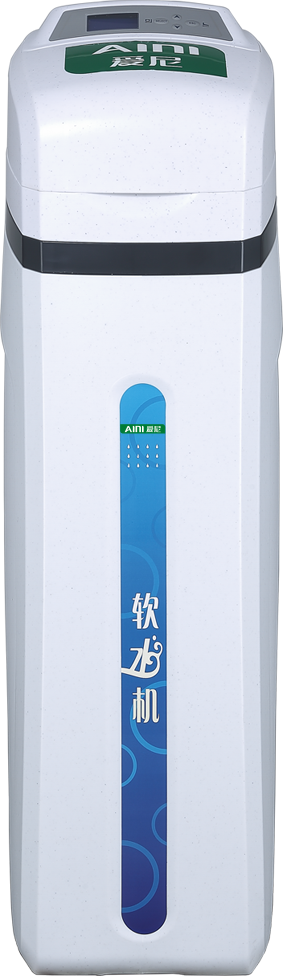
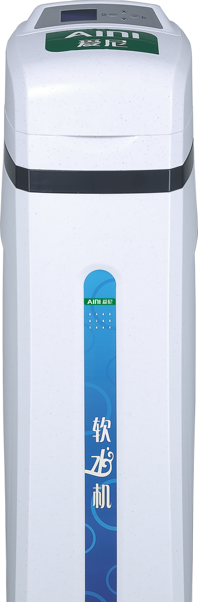
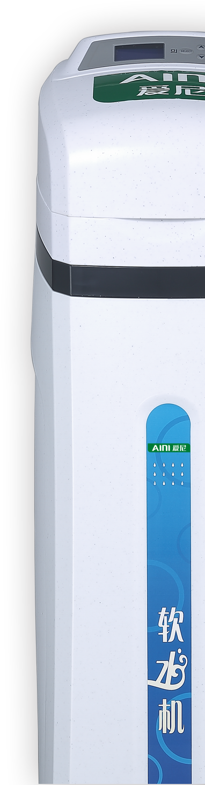
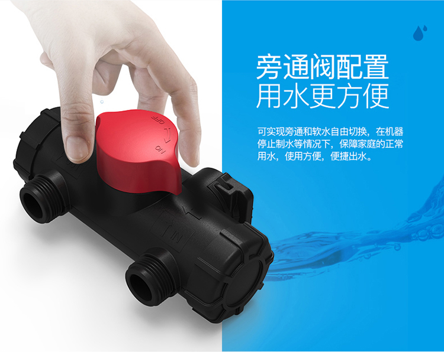
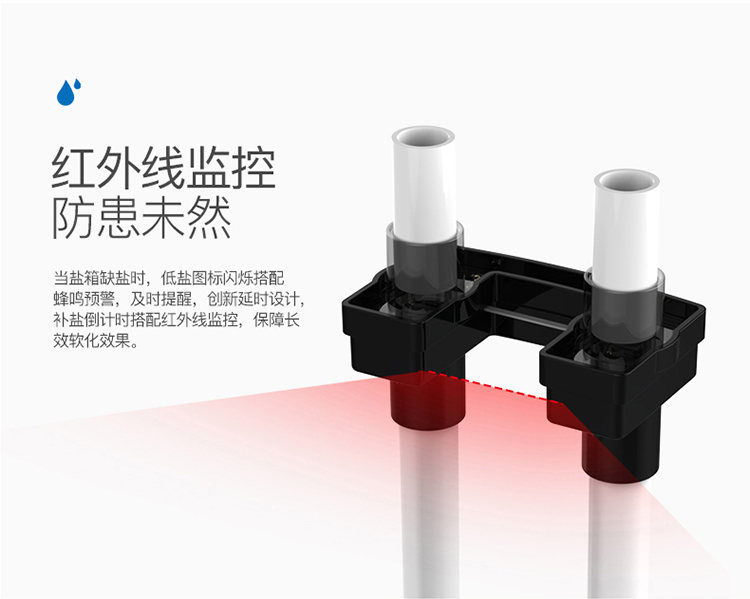
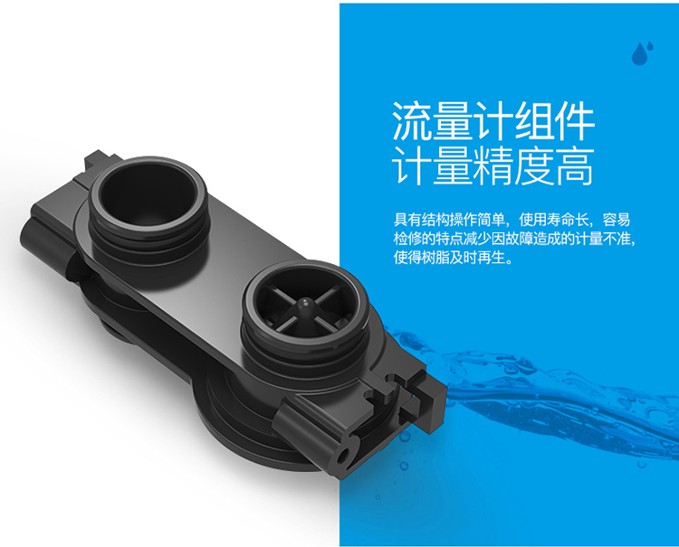
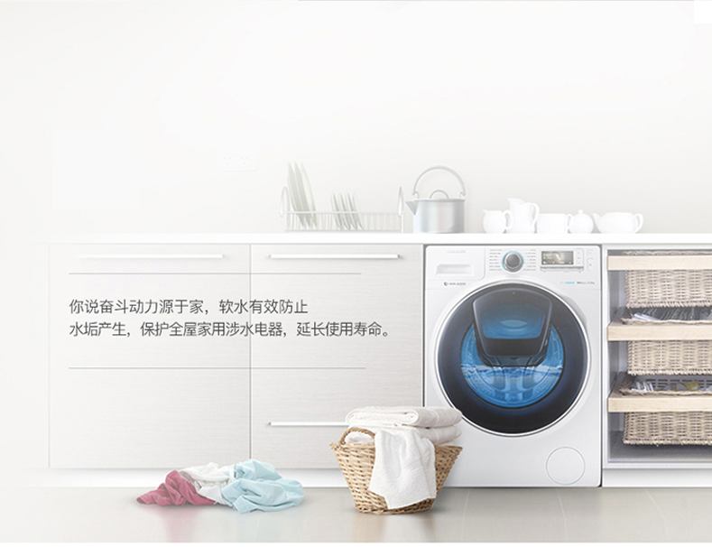
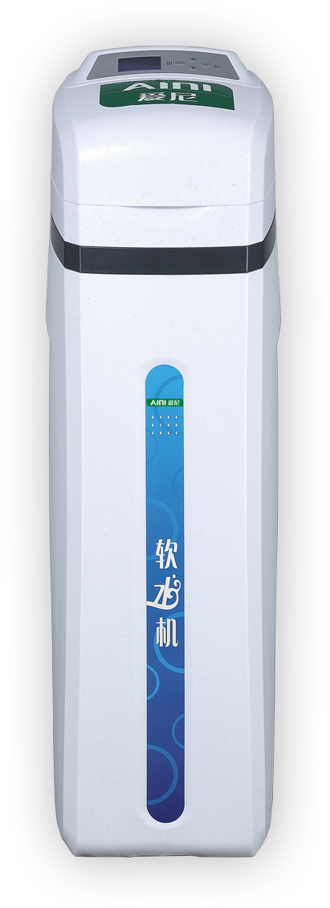

爱尼·中央软水
软化全屋水源 畅享清润生活
温和软水|润泽身心
- 软化
IEX水质软化
- 便捷
双模式操控
- 安全
全面虑芯防护
- 贴心
人性化配置
您家里的水健康吗？
HARDWATER
硬水所谓硬水是指含有较多的钙镁离子的水，硬水虽并不对
健康造成直接危害，但会对您的生活以及工作品味大打折扣。
SOFTWATER
软水软水高端衣物洗衣保护者
除掉大部分或全部钙镁离子后的水叫做软水，
软水不易于清洁剂的有效成分起反应，
洗出的衣物柔软、洁净、色泽如新
每个健康家庭都该有一台好软水器
我们都知道自来水不能直接饮用，把水烧开就可以了吗?科学表明，烧开的自来水无法除去对身体有害的重金
属、铁锈泥沙、耐高温细菌及余氯、农药。此外，饮水机桶装水如果不能尽快喝完，也会滋生细菌。饮用新
鲜的纯净水，是对健康最有益的饮水方式，因此我们建议，每个家庭都应配备软水器，改善健康生活品质。
软化生活用水
其实很有必要
中央软水器把好水质关，让每一滴水健康软润
全心全意|使用无忧
做工用心到每一个零件
智能冲洗滤材
经久耐用
根据使用数据，智能启动循环冲洗滤材，
让滤材充分与水接触，去除水中杂质，
强化滤芯性能，提高使用寿命。
保障用水高品质
双重过滤,去除杂质
结合以不锈钢滤网为核心的双重过滤设计，
双重防护防止颗粒活性炭、
石英砂流失，及保障高品质软水输出。





自来水中可能含有以下物质
即使将水烧开也无法去除
产品参数
软水机（KXRS-38II）
